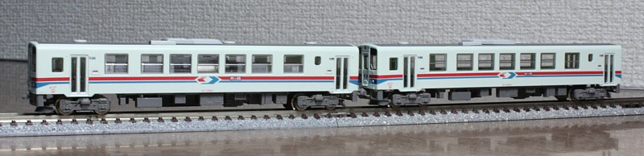

NDCは、新潟鐵工所(現 新潟トランシス)製の軽快気動車です。 主に全国の第3セクター鉄道で使用されていますが、JR九州なんかにもいます。
鉄道コレクション第19弾で発売されました。 私はコレクション系はコストパフォーマンスと完成度から買わないポリシー(そんなものあるんか)で、 模型店の開封販売予約とかも頑張ってスルーしてたんですがシークレットが若桜鉄道WT-2500とわかり衝動買い… どうせ買うならと箱買いしてしまい、相変わらず高くついてるような。
そういうわけで欲しかった若桜鉄道です。 1両は箱にちゃんとはいっており(あたり!)、1両手に入るともう1両欲しくなり開封販売に手を出してしまいました 実物は2両〜3両で運用されているイメージでしたが、実際ダイヤをみてみると1編成がひたすら若桜〜鳥取を往復しているようです。 というわけで若桜駅の構内でもない限り、横並びは無さそうです。
